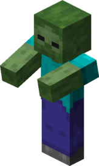

Zombies are a common hostile mob in Minecraft. They account for about 13% of all mobs in Minecraft.
StatsZombies have 20 HP, just like the player. They deal 2 damage on easy, 3 on normal mode, and 4 on hard.
BehaviorZombies naturally spawn in groups of 4, when it is dark enough, usually at night.
One unique thing about zombies is that they have the longest pursuing distance out of any mob, at 40 blocks.
This means that a zombie will start apprehending the player from 40 blocks away, with a clear line of sight.
Their attack is close-ranged, so it is best to stay afar from them.
Zombies are an undead mod, which means that they will start to burn and die when exposed to daylight, unless they are in water.
